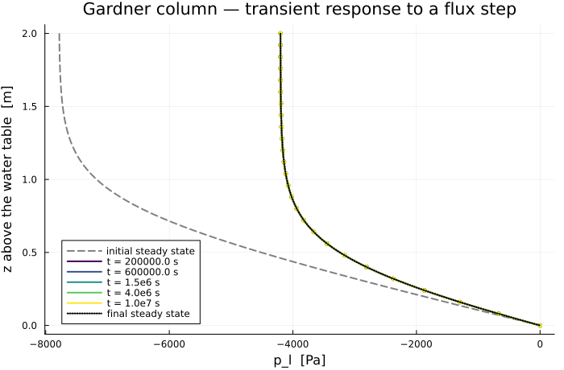

Transient Drainage of an Unsaturated Column
The steady Gardner benchmark verifies the retention and permeability curves and the flux with gravity, but at equilibrium the storage term drops out — so nothing yet checked the transient unsaturated path: the accumulation term, the time integration, and the interaction between the two.
This case closes that gap. The column starts at the steady profile for one infiltration rate, the rate is stepped at $t = 0$, and the approach to the new steady state is compared against an exact solution.
Why an exact transient solution exists
Richards' equation is nonlinear twice over: through $k_{rl}(p_c)$ in the flux and through $S_l(p_c)$ in the storage. Gardner's exponential law removes both at once when the two curves share their exponent. Writing $K^* = \exp(\alpha p_l)$, the water content is $\theta = \phi S_l = \phi K^*$ and the conductivity is $K_s K^*$, so
\[\phi\,\frac{\partial K^*}{\partial t} = \frac{K_s}{\alpha}\frac{\partial^2 K^*}{\partial z^2} + K_s \rho_l g\,\frac{\partial K^*}{\partial z}\]
— a linear advection–diffusion equation, with $D = K_s/(\alpha\phi)$ and drift $\beta D$, $\beta = \alpha\rho_l g$. The nonlinearity has not been approximated away; it has been absorbed exactly by the change of variable, which is why this is a verification and not a comparison.
Reference solution
The steady profile for a flux $q$ is the one the companion benchmark validates, $K^*_q(z) = (1+Q)e^{-\beta z} - Q$ with $Q = q/(K_s\rho_l g)$. Stepping from $q_A$ to $q_B$ and writing $w = K^* - K^*_{q_B}$ for the departure from the final state leaves a homogeneous problem,
\[w(0,t) = 0, \qquad \frac{\partial w}{\partial z}(L,t) + \beta w(L,t) = 0, \qquad w(z,0) = \Delta\left(e^{-\beta z} - 1\right),\quad \Delta = Q_A - Q_B\]
which solves in Laplace space:
\[\tilde w(z,s) = \frac{\Delta}{s}\left(e^{-\beta z} - 1\right) + \frac{\beta\Delta\,e^{\beta L/2}} {s\left[\tfrac{\beta}{2}\sinh(\mu L) + \mu\cosh(\mu L)\right]}\, e^{-\beta z/2}\sinh(\mu z), \qquad \mu = \sqrt{\tfrac{\beta^2}{4} + \tfrac{s}{D}}\]
Both limits can be checked by hand and are checked in the test: $s\tilde w \to w(z,0)$ as $s \to \infty$, and $s\tilde w \to 0$ as $s \to 0$, the latter cancelling exactly between the two terms.
include("richards_common.jl")
using LinearAlgebra
using PrintfSetup
A step from light to heavy infiltration, both downward.
const Q_BEFORE = -2.0e-7 # initial flux, upward positive [m/s]
const Q_AFTER = -1.2e-6 # flux imposed from t = 0 [m/s]
"""Advection–diffusion coefficients of the linearised problem: `(D, β)`."""
function linear_coefficients(m::GardnerColumn)
β = m.alpha * m.rho_l * abs(m.gravite)
D = saturated_conductivity(m) / (m.alpha * m.phi)
return D, β
end
"""Dimensionless flux ``Q = q/(K_s\\rho_l g)``."""
scaled_flux(m::GardnerColumn, q) = q / (saturated_conductivity(m) * m.rho_l * abs(m.gravite))
"""Steady ``K^*`` profile for flux `q`."""
function kstar_steady(m::GardnerColumn, z, q)
_, β = linear_coefficients(m)
Q = scaled_flux(m, q)
return (1 + Q) * exp(-β * z) - Q
endMain.kstar_steadyReference solution
sinh(μL) overflows for large s, so the quotient is written with decaying exponentials.
function _sinh_quotient(m::GardnerColumn, z, μ)
_, β = linear_coefficients(m)
L = m.L
num = exp(μ * (z - L)) * (1 - exp(-2μ * z))
den = (β / 2) * (1 - exp(-2μ * L)) + μ * (1 + exp(-2μ * L))
return num / den
end
"""
w_laplace(m, z, s; qA, qB)
Departure from the final steady state, in Laplace space.
"""
function w_laplace(m::GardnerColumn, z, s; qA = Q_BEFORE, qB = Q_AFTER)
D, β = linear_coefficients(m)
Δ = scaled_flux(m, qA) - scaled_flux(m, qB)
μ = sqrt(β^2 / 4 + s / D)
return (Δ / s) * (exp(-β * z) - 1) +
(β * Δ / s) * exp(β * (m.L - z) / 2) * _sinh_quotient(m, z, μ)
end
"""
transient_pressure(m, z, t; qA, qB) -> p_l [Pa]
Liquid pressure at height `z` and time `t`, by Stehfest inversion.
"""
function transient_pressure(m::GardnerColumn, z, t; qA = Q_BEFORE, qB = Q_AFTER)
kstar = if t <= 0
kstar_steady(m, z, qA)
else
kstar_steady(m, z, qB) + stehfest(s -> w_laplace(m, z, s; qA = qA, qB = qB), t)
end
return log(kstar) / m.alpha
endMain.transient_pressureSolving
The column starts on the exact steady profile for Q_BEFORE, and the top flux is switched to Q_AFTER from the first step onwards.
"""
run_transient(; m, N, probes, t_end)
Return `(m, z, probes, profiles)` with `profiles[i]` the pressure at time `probes[i]`.
"""
function run_transient(;
m = GardnerColumn(; q_top = Q_AFTER),
N = 200,
probes = [2.0e5, 6.0e5, 1.5e6, 4.0e6, 1.0e7],
Δt = 2.0e3,
)
grid = simplexgrid(range(0.0, m.L; length = N + 1))
sys = fvm_system(m, grid)
z = grid[Coordinates][1, :]
# Initial condition: the exact steady profile of the *previous* flux.
inival = unknowns(sys)
inival[1, :] .= [log(kstar_steady(m, zi, Q_BEFORE)) / m.alpha for zi in z]
inival[1, 1] = m.p_g
ctrl = VoronoiFVM.SolverControl(;
Δt = Δt,
Δt_min = Δt,
Δt_max = Δt,
Δu_opt = 1.0e4,
reltol = 1.0e-9,
abstol = 1.0e-11,
handle_exceptions = true,
verbose = false,
)
tsol = solve(sys; inival, times = (0.0, maximum(probes)), control = ctrl)
profiles = [tsol(t)[1, :] for t in probes]
return m, z, probes, profiles
end
model, z, probes, p_num = run_transient()(Main.GardnerColumn{Gardner{Float64}, GardnerKrl{Float64}}(1.0e-12, 0.001, 1000.0, -9.81, 0.35, 0.0, 0.0005, -1.2e-6, 2.0, Gardner{Float64}(0.0005), GardnerKrl{Float64}(0.0005)), [0.0, 0.01, 0.02, 0.03, 0.04, 0.05, 0.06, 0.07, 0.08, 0.09 … 1.91, 1.92, 1.93, 1.94, 1.95, 1.96, 1.97, 1.98, 1.99, 2.0], [200000.0, 600000.0, 1.5e6, 4.0e6, 1.0e7], [[1.1981000200781586e-36, -85.85905058010233, -171.18285459212126, -255.95162690047488, -340.1451704455533, -423.74289612208054, -506.72384556188615, -589.0667169366483, -670.7498938829632, -751.7514776362797 … -4201.001535409758, -4201.057382310168, -4201.110511014259, -4201.161053500549, -4201.209135380834, -4201.254876205223, -4201.298389752662, -4201.339784307633, -4201.379162923676, -4201.416623674355], [1.1999999999215072e-36, -85.83969786475163, -171.14344433272814, -255.89145517135364, -340.06353602238704, -423.63910239064893, -506.5972025353618, -588.9165433786186, -670.5755195321999, -751.5522455280628 … -4200.9384667249105, -4200.997000244342, -4201.0527330151035, -4201.1057989765995, -4201.156325669672, -4201.204434541631, -4201.250241236821, -4201.29385587337, -4201.3353833067995, -4201.374923381092], [1.1999999999999987e-36, -85.83969786395214, -171.14344433110003, -255.89145516886788, -340.06353601901463, -423.6391023863612, -506.59720253013023, -588.916543372415, -670.5755195249967, -751.5522455198329 … -4200.938466722333, -4200.997000241875, -4201.0527330127425, -4201.105798974342, -4201.156325667514, -4201.20443453957, -4201.250241234853, -4201.293855871494, -4201.3353833050105, -4201.374923379388], [1.1999999999999987e-36, -85.83969786395214, -171.14344433110003, -255.89145516886788, -340.06353601901463, -423.6391023863612, -506.59720253013023, -588.916543372415, -670.5755195249967, -751.5522455198329 … -4200.938466722333, -4200.997000241875, -4201.0527330127425, -4201.105798974342, -4201.156325667514, -4201.20443453957, -4201.250241234853, -4201.293855871494, -4201.3353833050105, -4201.374923379388], [1.1999999999999987e-36, -85.83969786395214, -171.14344433110003, -255.89145516886788, -340.06353601901463, -423.6391023863612, -506.59720253013023, -588.916543372415, -670.5755195249967, -751.5522455198329 … -4200.938466722333, -4200.997000241875, -4201.0527330127425, -4201.105798974342, -4201.156325667514, -4201.20443453957, -4201.250241234853, -4201.293855871494, -4201.3353833050105, -4201.374923379388]])Results
using Plots
D, β = linear_coefficients(model)
@printf("Q before / after : %.5f -> %.5f\n", scaled_flux(model, Q_BEFORE), scaled_flux(model, Q_AFTER))
@printf("Diffusivity D : %.4e m²/s\n", D)
@printf("β = α ρ g : %.4e m⁻¹\n", β)
@printf("Characteristic L²/D : %.3e s\n", model.L^2 / D)
println()Q before / after : -0.02039 -> -0.12232
Diffusivity D : 5.7143e-06 m²/s
β = α ρ g : 4.9050e+00 m⁻¹
Characteristic L²/D : 7.000e+05 sThe reference, checked before use
At t → 0 it must return the initial steady profile, and at large time the final one.
@printf("%-8s %-16s %-16s %-16s %-16s\n", "z [m]", "p(t→0)", "steady before", "p(t→∞)", "steady after")
for zi in (0.4, 1.0, 1.8)
@printf(
"%-8.1f %-16.2f %-16.2f %-16.2f %-16.2f\n", zi,
transient_pressure(model, zi, 1.0e-3),
log(kstar_steady(model, zi, Q_BEFORE)) / model.alpha,
transient_pressure(model, zi, 1.0e9),
log(kstar_steady(model, zi, Q_AFTER)) / model.alpha,
)
end
println()z [m] p(t→0) steady before p(t→∞) steady after
0.4 -3689.08 -3689.08 -2807.25 -2807.25
1.0 -7176.57 -7176.57 -4098.57 -4098.57
1.8 -7771.66 -7771.66 -4200.06 -4200.06Error against the reference
println(" t [s] | L2 error | L∞ error [Pa]")
println("-"^46)
errors = Float64[]
for (t, pn) in zip(probes, p_num)
ref = [transient_pressure(model, zi, t) for zi in z]
e2 = norm(pn .- ref) / norm(ref)
push!(errors, e2)
@printf(" %10.2e | %.3e | %10.2f\n", t, e2, maximum(abs.(pn .- ref)))
end
println("-"^46)
@printf("worst relative L2 error: %.3e\n", maximum(errors)) t [s] | L2 error | L∞ error [Pa]
----------------------------------------------
2.00e+05 | 5.381e-05 | 0.34
6.00e+05 | 1.771e-05 | 0.12
1.50e+06 | 1.316e-05 | 0.09
4.00e+06 | 1.371e-05 | 0.10
1.00e+07 | 1.366e-05 | 0.09
----------------------------------------------
worst relative L2 error: 5.381e-05Profiles
plt = plot(;
xlabel = "p_l [Pa]", ylabel = "z above the water table [m]",
title = "Gardner column — transient response to a flux step",
legend = :bottomleft, size = (700, 460),
)
zfine = range(0.001, model.L; length = 300)
palette = cgrad(:viridis, max(length(probes), 2); categorical = true)
plot!(
plt, [log(kstar_steady(model, zi, Q_BEFORE)) / model.alpha for zi in zfine], zfine;
color = :grey, ls = :dash, lw = 2, label = "initial steady state",
)
for (i, (t, pn)) in enumerate(zip(probes, p_num))
plot!(
plt, [transient_pressure(model, zi, t) for zi in zfine], zfine;
color = palette[i], lw = 2, label = "t = $(round(t; sigdigits = 2)) s",
)
plot!(
plt, pn[1:8:end], z[1:8:end];
color = palette[i], seriestype = :scatter, ms = 3, mswidth = 0, label = "",
)
end
plot!(
plt, [log(kstar_steady(model, zi, Q_AFTER)) / model.alpha for zi in zfine], zfine;
color = :black, ls = :dot, lw = 2, label = "final steady state",
)
plt
Convergence
The two refinements behave differently here, and it is worth separating them.
function errors_at(; N, Δt)
mm, zz, pr, pn = run_transient(; N = N, Δt = Δt)
return [
let ref = [transient_pressure(mm, zi, t) for zi in zz]
norm(p .- ref) / norm(ref)
end for (t, p) in zip(pr, pn)
]
enderrors_at (generic function with 1 method)In space the scheme is second order, cleanly — measured at the last probe, where the solution is smooth and the temporal error is negligible.
println(" nodes | L2 error at t = 1e7 | ratio")
println("-"^46)
prev = NaN
for N in (100, 200, 400)
e = errors_at(; N = N, Δt = 2.0e3)[end]
@printf(" %5d | %.3e | %s\n", N + 1, e, isnan(prev) ? "—" : @sprintf("%.2f", prev / e))
global prev = e
end nodes | L2 error at t = 1e7 | ratio
----------------------------------------------
101 | 5.454e-05 | —
201 | 1.366e-05 | 3.99
401 | 3.416e-06 | 4.00In time the error falls faster than the first order backward Euler would give asymptotically. That is not an accuracy bonus to boast about: the response to a flux step superposes modes with very different rates, and backward Euler over-damps the stiffest ones rather than under-resolving them, so the measured slope in this range is pre-asymptotic. The table is reported for what it is — a refinement study, not an order.
println("\n Δt [s] | L2 error at t = 2e5 | ratio")
println("-"^46)
prev = NaN
for Δt in (1.6e4, 8.0e3, 4.0e3, 2.0e3)
e = errors_at(; N = 400, Δt = Δt)[1]
@printf(" %.2e | %.3e | %s\n", Δt, e, isnan(prev) ? "—" : @sprintf("%.2f", prev / e))
global prev = e
end
Δt [s] | L2 error at t = 2e5 | ratio
----------------------------------------------
1.60e+04 | 1.147e-03 | —
8.00e+03 | 3.630e-04 | 3.16
4.00e+03 | 1.298e-04 | 2.80
2.00e+03 | 4.385e-05 | 2.96Notes
- The nonlinearity is removed exactly, not approximated. $K^* = \exp(\alpha p_l)$ linearises both the flux and the storage term at once, provided the retention and permeability curves share their exponent — which is why
GardnerColumnuses the sameαfor both. - What this adds over the steady case. The steady benchmark never exercises the accumulation term; here it drives the whole solution, and the time integration is measured against an exact answer rather than an equilibrium.
- Not Liakopoulos. The classical transient unsaturated benchmark is an experiment — measured profiles, no closed-form solution. Embedding digitised measurements would mean carrying a reference nobody can check, which is the opposite of what a validation suite is for. A case whose reference can be derived and verified says more about the code, and Liakopoulos remains available later as a comparison against data, clearly labelled as such rather than as verification.